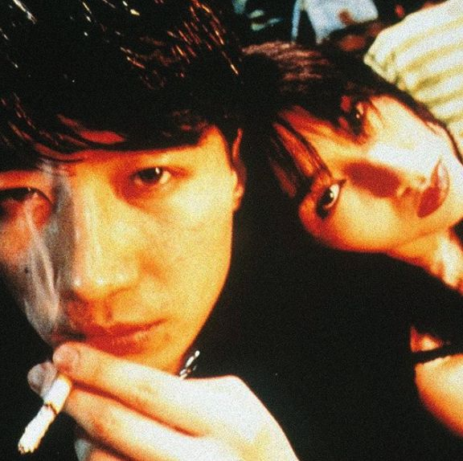
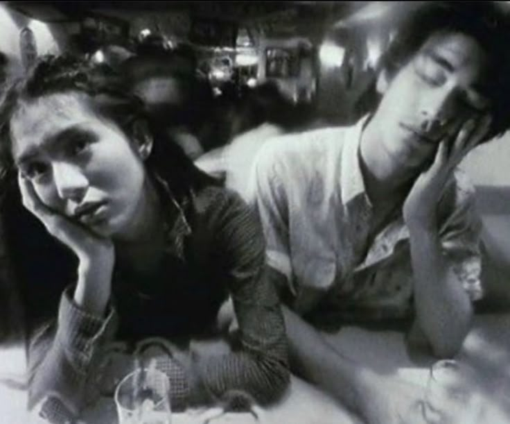
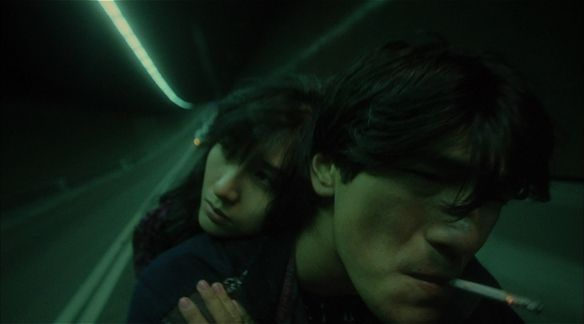

Waarom ik deze film zo goed vind
Fallen Angels (1995) voelt intens en toch stil. De beelden blijven hangen in zwart-wit contrasten. Het gaat over mensen die alleen zijn maar toch iets zoeken. Het zijn aparte karakters en verhalen die uiteindelijk samen komen.
Volgende sectieWat maakt deze film bijzonder
Vooral de cinematografie manier dat ze dit hebben gefilm is super uniek en blijft zeker hangen
Bekijk foto'sFoto's uit de film
Enkele beelden die de sfeer van Fallen Angels perfect laten zien.




Filmdetails
Regisseur
Wong Kar-wai
Jaar
1995
Duur
99 minuten
Genre
Drama, Romantiek, Crime